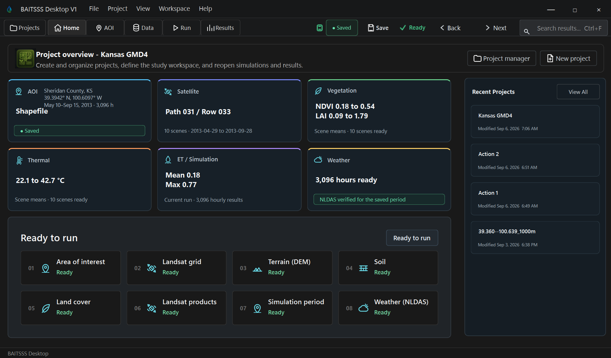
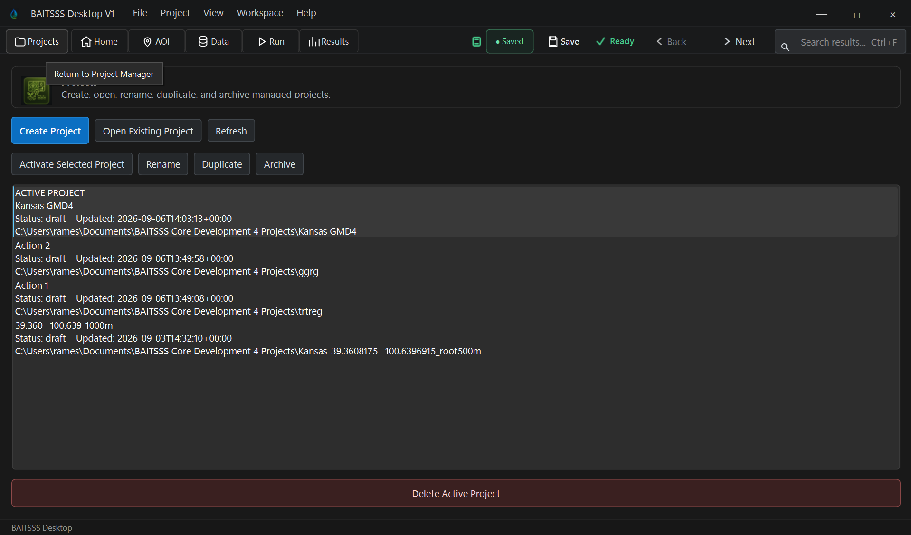
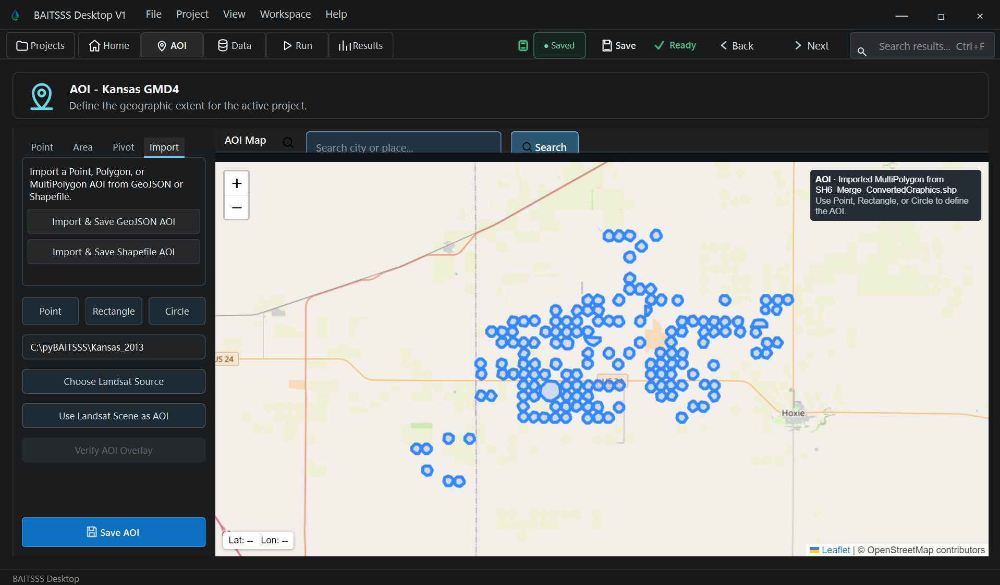
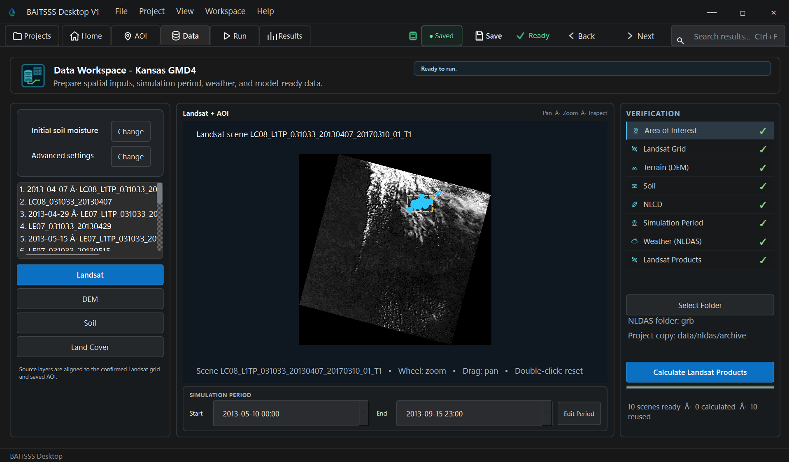
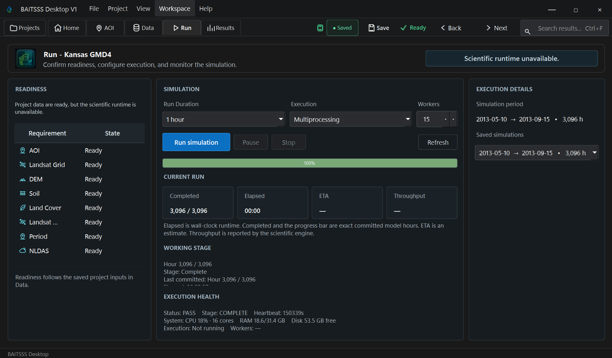
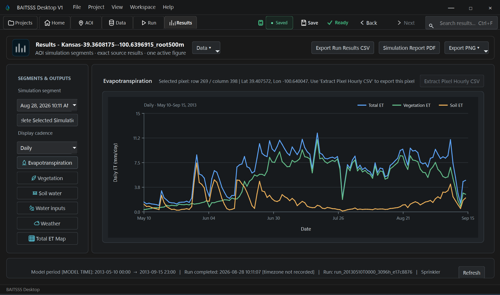

HomeProject status, workflow entry points, and the current modeling context.
 BAITSSS
BAITSSSBAITSSS Desktop organizes project definition, scientific input checks, hourly execution of the BAITSSS model, Results inspection, and export within one persistent project environment.
The short video follows the current BAITSSS Desktop V1 validation build from project preparation through Results.
These are direct screenshots from the BAITSSS Desktop V1 validation interface. They show the project, AOI, data, execution, and Results environments rather than conceptual mockups.







Select any screenshot to open the full size image. Interface details may continue to change while BAITSSS Desktop V1 remains in final validation and release cleanup.
Create or reopen a project, define the spatial domain and simulation period, and organize the required environmental inputs.
Check temporal coverage, required variables, spatial compatibility, data preparation status, and other conditions that must be satisfied before execution.
Run the BAITSSS model continuous hourly water and energy balance while preserving the state carried from one hour to the next.
Review mapped outputs, selected pixel time series, soil water conditions, modeled irrigation information, run identity, and scientific exports.
Use the selected run and its exported products for the intended analysis or downstream evaluation.
The modernization introduced an installable Windows product, project and run lifecycle management, controlled data preparation, a stable science execution path, recovery, Results authority, provenance, automated equivalence checks, release tooling, and documentation while retaining a frozen scientific reference.
Each item below represents a separate maturity control. Status is stated directly so implemented capability is not confused with work still in progress.
Frozen V7 reference and isolated V8 development authorities preserve an auditable before-and-after scientific baseline.
Core science execution files are source-locked to reviewed identities; changes require explicit integration review.
V7 to V8 numerical comparison infrastructure protects the scientific calculation during modernization, including seasonal whole-AOI evidence.
Automated tests cover runtime authority, engine binding, project lifecycle, Results authority, spatial math, storage, readiness, run recovery, and other release-critical contracts.
GitHub Actions executes equivalence and contract checks on integration paths rather than relying only on manual testing.
Checkpoint and resume behavior is tested to preserve the scientific trajectory when execution is interrupted and resumed.
AOI, static data, NLDAS completeness, run readiness, and other required inputs are validated before scientific execution.
Critical run inputs are frozen locally for execution and provenance so later project changes cannot silently rewrite an existing run.
Advanced Settings are being traced from saved value through generated constants, runtime contract, and final science-kernel value while duplicate fallbacks are classified and removed where appropriate.
The product is converging on one supported runtime and engine path rather than multiple interchangeable scientific execution routes.
Viewer, Results, lifecycle, runtime, storage, and state authorities have been progressively consolidated to reduce duplicate behavior.
Results are bound to selected runs and simulation periods, with scientific export and run-specific provenance controlled explicitly.
Run interruption, checkpoint recovery, failure reporting, disk guards, and lifecycle recovery are explicit product behaviors.
Execution was modernized around RAM-resident state, reduced materialization, parallel spatial execution, and bounded storage while numerical behavior was checked against the reference.
Runtime identity, frozen configuration, run-local inputs, selected data sources, and output association are tracked so Results can be tied back to the executed state.
The Windows desktop package carries its own controlled runtime instead of relying on an unknown system Python installation.
Build preflight, runtime payload checks, installer identity, release manifest, and package-data cleanup are part of release preparation.
Release-specific acceptance tooling and documented criteria exist separately from ordinary development testing.
User guidance, capability documentation, release material, scientific history, software development record, and access guidance are being completed for Desktop V1.
Broader third-party use, independent external V&V, and accumulated field experience across institutions remain future maturity evidence.
Desktop V1 is the first release version; multi-release backward compatibility and years of operational maintenance cannot yet be demonstrated.
Frozen V7 remains the comparison authority for scientific and output equivalence while V8 modernization is allowed to change architecture without silently changing model behavior.
A long stateful whole-AOI run provides evidence that modernization preserved the propagated scientific trajectory across a seasonal simulation rather than only a few isolated calculations.
Interrupted runs are tested against uninterrupted execution so recovery does not create a second scientific path.
Reviewed scientific authorities are locked by source identity. A changed source file becomes an explicit review event rather than an unnoticed code edit.
Project lifecycle, AOI, data-source state, validation, readiness, and run configuration.
Controlled runtime discovery, engine adapter, science bridge, execution authority, and frozen inputs.
Established BAITSSS equations, state propagation, model parameters, weather, vegetation, irrigation, and energy and water balance calculations.
Execution, parallel spatial work, checkpointing, recovery, disk protection, finalization, and storage management.
Run-bound outputs, scientific export, reports, retained storage, and traceability back to the executed configuration.
The science execution path, desktop workflow, project lifecycle, input preparation, run and recovery, Results, provenance, packaging, and release-control mechanisms are substantially implemented. Current work is concentrated on authority cleanup, final validation, human workflow checks, documentation, and release acceptance rather than creating a new model architecture.
For the complete capability inventory, scientific formulation, evidence, or business pathway, continue to the corresponding authority page.